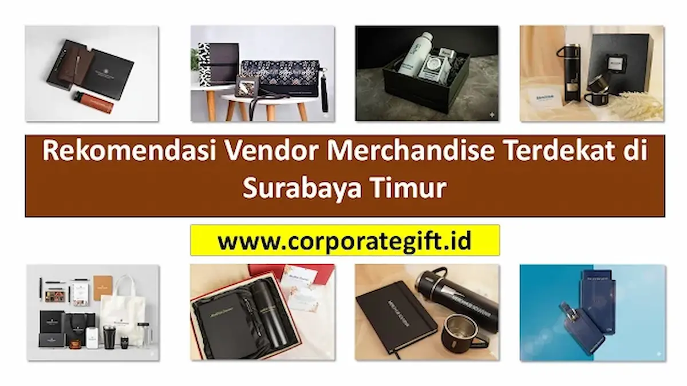

Corporate Gifts ID - Vendor merchandise terdekat di Surabaya Timur adalah penyedia jasa souvenir dan corporate gift custom yang berlokasi strategis di kawasan Rungkut, Mulyorejo, Gubeng, dan Sukolilo, sehingga memudahkan perusahaan, instansi pendidikan, dan event organizer di sekitar wilayah tersebut untuk konsultasi tatap muka, pengecekan sampel fisik secara cepat, serta pengambilan atau pengiriman barang dengan biaya yang lebih hemat.
Bagi perusahaan dan instansi yang berlokasi di area Surabaya Timur, menemukan vendor merchandise yang lokasinya strategis bisa menghemat banyak waktu, biaya, dan tenaga. Proses koordinasi, pengecekan sampel, hingga pengambilan barang menjadi jauh lebih efisien jika dilakukan dengan partner lokal yang lokasinya mudah dijangkau.
Jika kantor atau lokasi acara Anda berada di sekitar Rungkut, Mulyorejo, Gubeng, Sukolilo, atau kawasan industri SIER, Anda berada di tempat yang tepat. Artikel ini akan merekomendasikan solusi terdekat untuk semua kebutuhan merchandise perusahaan custom dan cinderamata berkualitas tinggi.
Poin Kunci Vendor Merchandise Surabaya Timur:
- Aksesibilitas Geografis: Dekat dengan pusat bisnis Rungkut SIER, pusat akademik Sukolilo (ITS, Unair), dan koridor perkantoran Gubeng-Kertajaya.
- Sampel Fisik Nyata: Kemudahan memegang material bahan kain, ketebalan tumbler SUS304, dan hasil grafir laser sebelum pesanan massal berjalan.
- Fleksibilitas Logistik: Pilihan pick-up mandiri di workshop atau pengiriman kurir lokal hari yang sama tanpa risiko kerusakan perjalanan jauh.
- Solusi Pengadaan B2B: Kelengkapan administrasi faktur pajak resmi, legalitas perusahaan, dan layanan purnajual terpercaya.
4 Keuntungan Memilih Vendor Souvenir Lokal di Surabaya Timur
Mengapa memilih vendor yang terdekat menjadi sebuah keuntungan strategis? Berikut empat alasan utamanya bagi operasional bisnis Anda:
- Kemudahan Konsultasi Langsung: Anda bisa datang langsung ke workshop atau showroom kami untuk berdiskusi, melihat material secara fisik, dan merencanakan proyek cinderamata Anda secara tatap muka tanpa sekat komunikasi.
- Pengecekan Sampel Fisik Lebih Cepat: Ingin memastikan kualitas bahan kain atau hasil cetak sebelum produksi massal dimulai? Dengan lokasi yang dekat, proses approval sampel menjadi sangat cepat, mengurangi potensi revisi yang membuang waktu.
- Pengiriman Fleksibel dan Hemat Biaya: Untuk area Surabaya Timur, kami menawarkan opsi pengiriman yang lebih cepat dan fleksibel. Anda bahkan bisa mengambil langsung pesanan Anda ke lokasi untuk menghemat ongkos kirim.
- Mendukung Ekosistem Bisnis Lokal: Bekerja sama dengan penyedia jasa lokal berarti turut serta memperkuat perputaran ekonomi dan jaringan bisnis di kawasan Jawa Timur.

Konsultasi dan pengecekan sampel fisik produk souvenir kantor secara langsung di showroom resmi.
Layanan Lengkap yang Kami Sediakan di Surabaya Timur
Sebagai vendor merchandise spesialis di Surabaya Timur, kami bukan hanya mencetak barang, tetapi menyediakan solusi terpadu dari hulu ke hilir.
1. Produksi Berbagai Jenis Souvenir Kantor
Kami memproduksi beragam kategori produk yang bisa disesuaikan dengan kebutuhan instansi Anda, di antaranya:
- Paket Seminar Kit Eksklusif: Pilihan tas goodie bag, buku catatan, dan tanda pengenal peserta untuk acara seminar, workshop, atau rapat kerja tahunan instansi Anda.
- Tumbler Custom Berbagai Bahan: Mulai dari botol plastik BPA-Free, tumbler insert paper promosi, hingga tumbler vacuum stainless steel SUS304 tahan panas dan dingin 12-24 jam.
- Notebook Agenda Kulit Custom: Buku catatan profesional berbahan PU leather mewah dengan kustomisasi logo teknik deboss atau hot stamping.
- Apparel & Kaos Polo Bordir: Seragam kerja lapangan, polo shirt katun piqué, dan jaket event bordir komputer berkerapatan tinggi.
- Pilihan Produk Ramah Lingkungan: Tote bag blacu, sedotan stainless, dan peralatan makan gandum (wheat straw) untuk menunjukkan komitmen keberlanjutan perusahaan Anda.
2. Kustomisasi Logo Profesional
Tim produksi kami siap membantu Anda memilih teknik kustomisasi terbaik. Apakah identitas visual Anda lebih cocok menggunakan sablon presisi, bordir komputer, cetak UV full colour, atau butuh kesan kemewahan dari teknik grafir laser permanen? Kami akan memberikan rekomendasi yang paling tepat sesuai karakter material suvenir.
3. Melayani Berbagai Klien di Area Surabaya Timur
Lokasi kami yang strategis memungkinkan kami untuk melayani berbagai segmen klien di Surabaya Timur secara responsif, termasuk:
- Perusahaan dan Pabrik Manufaktur: Di kawasan industri Rungkut (SIER), Berbek, dan sekitarnya.
- Instansi Pendidikan & Kampus: Seperti universitas terkemuka (ITS, Unair, Unesa) serta sekolah negeri di area Sukolilo, Mulyorejo, dan Gubeng.
- Perkantoran dan Bisnis Komersial: Di sepanjang koridor arteri utama seperti Jl. Ir. Soekarno (MERR), Jl. Raya Kertajaya, dan Jl. Manyar.
- Event Organizer (EO) & Agensi MICE: Yang menyelenggarakan pameran, simposium, atau expo di pusat konvensi dan mall Surabaya Timur.
Tabel Matriks Kawasan Layanan dan Rekomendasi Produk
Berikut pemetaan zonasi kebutuhan cinderamata korporat di wilayah Surabaya Timur:
| Kawasan Layanan | Karakter Klien Utama | Rekomendasi Produk | Keunggulan Logistik Lokal |
|---|---|---|---|
| SIER & Rungkut Industri | Pabrik manufaktur, logistik B2B, pergudangan | Kaos polo bordir, tumbler SUS304, safety gift set | Akses cepat, opsi pick-up langsung bebas ongkos kirim |
| Sukolilo & Mulyorejo | Kampus perguruan tinggi, sekolah, lembaga riset | Paket seminar kit, lanyard ID card, tote bag kanvas | Sangat cepat untuk approval mockup fisik dan drop-off event |
| Gubeng & Kertajaya | Perbankan, BUMN, instansi dinas pemerintah | Executive gift set VIP, agenda kulit deboss, pulpen metal | Pengiriman kurir instan di hari yang sama dengan garansi aman |
| Koridor MERR & Sekitarnya | Startup digital, konsultan bisnis, agensi kreatif | Tech gadget, powerbank fast charging, flashdisk kartu UV | Koordinasi tatap muka sangat fleksibel dan efisien |
Kunjungi Workshop dan Showroom Resmi Kami
Meskipun kami melayani seluruh area sebagai penyedia layanan pengadaan souvenir kantor resmi di Surabaya dan Indonesia, kami mengundang Anda yang berdomisili di area Surabaya Timur untuk berkunjung dan berkonsultasi langsung.
Showroom & Kantor Layanan CorporateGifts.ID:
- Alamat Kantor & Showroom: Jl. Basuki Rahmat No. 12-18, Tegalsari, Surabaya, Jawa Timur 60261 (Akses mudah dan strategis dari kawasan Surabaya Timur via Jl. Gubeng atau Raya Kertajaya).
- Jam Operasional: Senin - Jumat (08.30 - 17.30 WIB), Sabtu (09.00 - 15.00 WIB).
- Konsultasi & Janji Temu WhatsApp: +62 895-6390-68080
- Fasilitas Showroom: Display ratusan sampel fisik souvenir, konsultasi desain grafis gratis, dan penyerahan contoh material langsung.
Kesimpulan: Partner Merchandise Strategis Anda di Surabaya Timur
Efisiensi waktu, transparansi anggaran, dan jaminan mutu adalah kunci utama dalam memilih vendor suvenir korporat. Dengan lokasi yang dekat, fasilitas sampel lengkap, dan pemahaman mendalam akan kebutuhan pasar lokal, Corporate Gifts ID siap menjadi mitra strategis bagi kesuksesan agenda promosi perusahaan Anda di Surabaya Timur.
Jangan ragu untuk menjadwalkan kunjungan showroom atau menghubungi konsultan kami via WhatsApp untuk meminta preview mockup desain gratis. Unduh juga e-katalog produk 2026 atau ajukan formulir permintaan penawaran harga B2B hari ini.